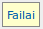
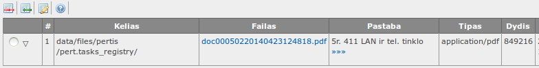
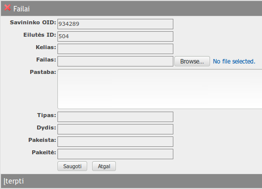
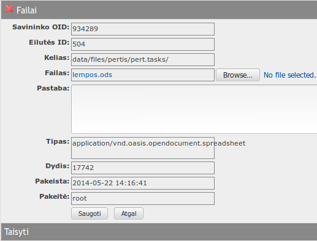
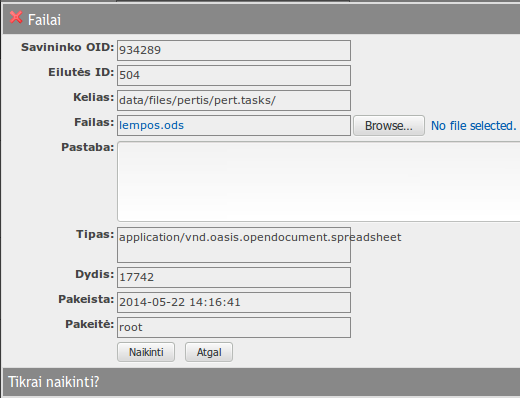

į pradžią Turinys
Failai
Failai gali būti prisegti prie visų sistemos registų įrašų.
Failų lentelė atverčiama iš įrašo redagavimo formos, pasirinkus skirtuką „Failai“.- 
- 
Lentelės rodinyje matyti:
- Kelias – failo vieta.
- Failas – saitas failo atvertimui, failo vardas.
- Pastaba – failo aprašymas.
- Tipas – failo MIME tipas.
- Dydis – failo dydis, B.
- Pakeista – įrašo pakeitimo data, laikas.
- Pakeitė – įrašą pakeitusio naudotojo vardas.
Galima atlikti šiuos veiksmus:
į pradžią TurinysĮkelti failą
- Spausti
 lentelės antraštėje.
lentelės antraštėje. - Atsiverčia naujo failo įkėlimo forma.
- 
- Formoje spausti mygtuką , išsirinkti failą iš lokalios failų sistemos ir užpildyti laukelį „Pastaba“ – bet koks tekstas, paaiškinantis failą.
- Paspaudus failas įkeliamas, duomenys išsaugomi, forma užverčiama.
- Paspaudus failas neįkeliamas, duomenys neišsaugomi, forma užverčiama.
- Pažymėti norimą pakeisti failą.
- Spausti
 lentelės antraštėje.
lentelės antraštėje. - Atsiverčia failo pakeitimo forma.
- 
- Forma užpildoma taip pat, kaip ir įkeliant failą.
- Paspaudus failas pakeičiamas, duomenys išsaugomi, forma užverčiama.
- Paspaudus failas nepakeičiamas, duomenys neišsaugomi, forma užverčiama.
- Pažymėti norimą panaikinti įrašą.
- Spausti
 lentelės antraštėje.
lentelės antraštėje. - Atsiverčia failo naikinimo forma.
- 
- Paspaudus failas ir įrašas apie jį sunaikinami, forma užverčiama.
- Paspaudus failas ir įrašas apie jį nesunaikinamas, forma užverčiama.
Pakeisti įkeltą failą kitu
Naikinti failą